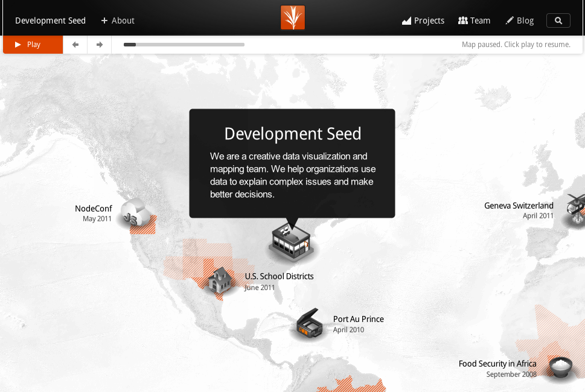
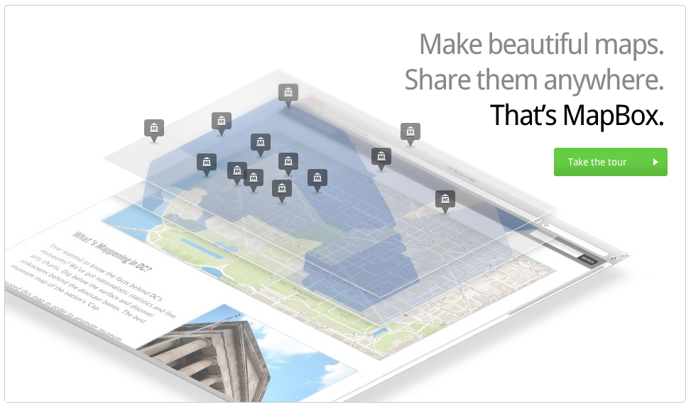
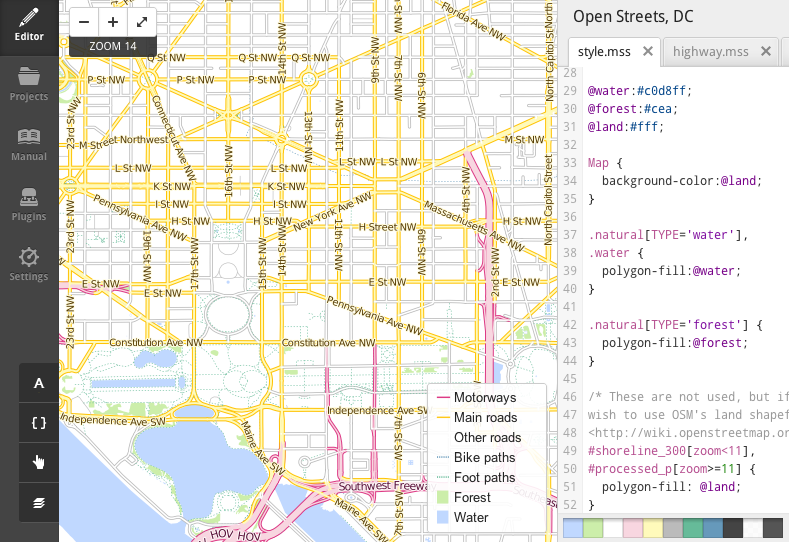
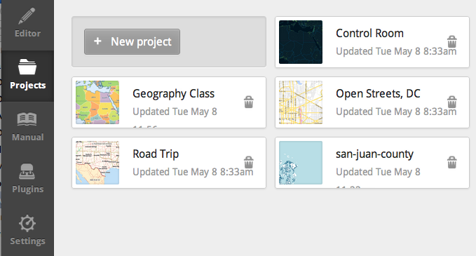
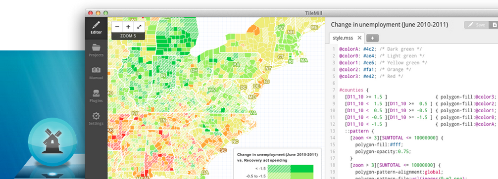
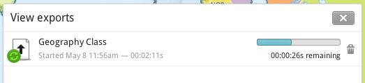
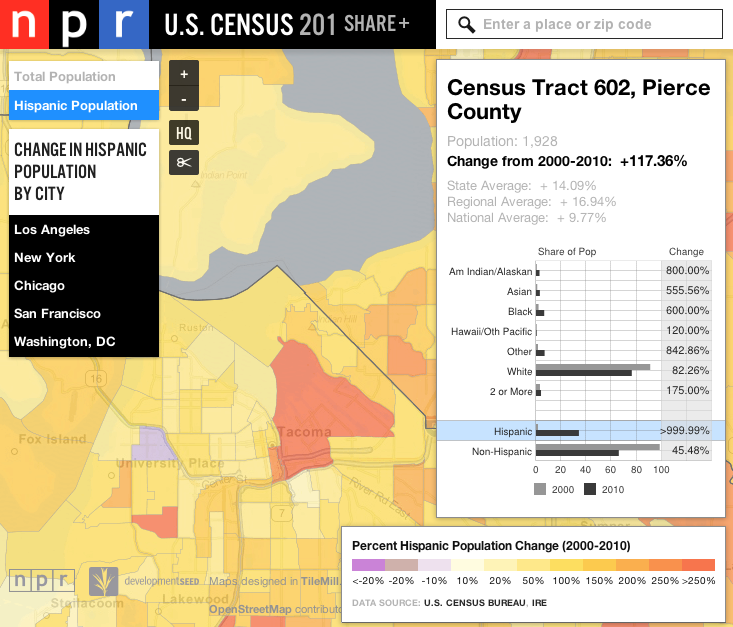
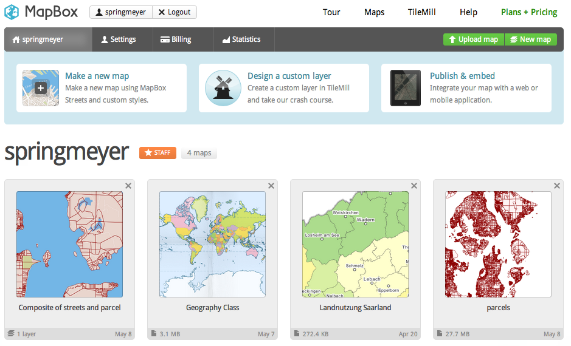
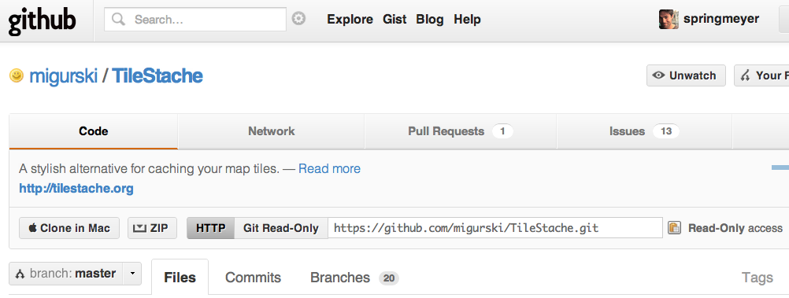

Dane Springmeyer
@springmeyer
Make Beautiful Maps, Share Them Anywhere
WA URISA
| May 8th, 2012 | dane@mapbox.com
My Background
Geographer, Development Seed / MapBox
Lead on Mapnik, developer on TileMill, Speaker, Instructor
Technical Director and founding member of HOT (Humanitarian OpenStreetMap Team)

We build MapBox

Make Beautiful Maps
TileMill
Share Them Anywhere
MapBox Hosting
Design principles
Design for the web and mobile,
first
Open source and user driven from the
start
Cartographer
owns
design and interactivity (cut out the IT dept)
Leverage the best of the
desktop
and
web
, drop the need for a
server
Work offline
without
restriction or $ (e.g. Google Earth)
Goals
Reduce costs and barriers to communicating data
Every step free except scaling to the cloud (hosting)
Pay only for what you use!
Where we are headed...
Learn about the tools: TileMill, MapBox Hosting, iPad app
Demo a practical example of using San Juan County data, styling, uploading, viewing on iPad, using map embed
Mini-workshop - try live TileMill Instance
TileMill

TileMill Details
100% open source
Cross platform: Windows, OS X, Ubuntu
Runs on both Desktop and Web (Same code!)
Creates outputs for both Desktop (PNG/JPEG/SVG/PDF), Web (MBTiles), and Applications (Mapnik XML)
Written in Javascript (Node.js) and C++ (Mapnik)
TileMill

TileMill

TileMill

TileMill

Custom MapBox account

MapBox Hosting Details
Upload, store maps, make private or public
Combine layers through compositing, track usage with statistics
Robust - no fear of going down under load
Well known MapBox users
MapBox Pricing
Bring your own Server

Demo!
San Juan County data (
http://sanjuanco.com/gis/gislib.aspx
)
Style in TileMill
Export and view on iPad
Upload and view on Web (test embed)
http://ds.io/tilemill-ec2